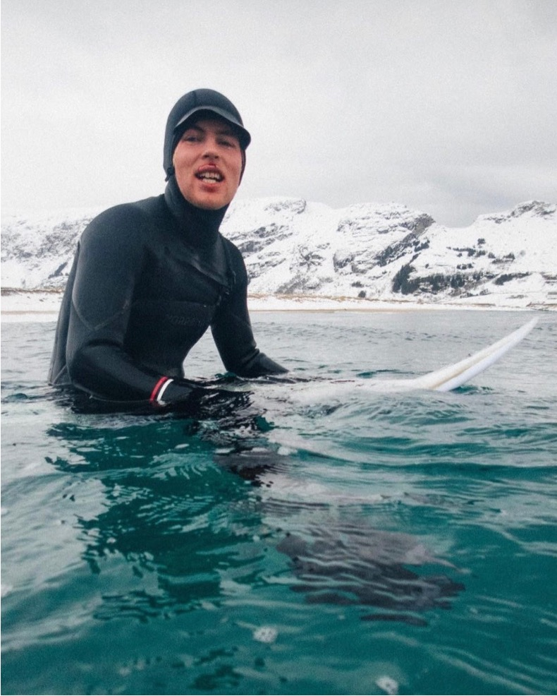

- 
-
Tube protection is a watersports helmet startup located in Oslo, Norway. The company aims to make the worlds best watersports helmets.
The work behind Tube Protection was started in early 2022 after the founder Thomas Klingenberg got a five month concussion from hitting his head on the sorfboard. With a background in mountain biking he knew that this injury easily could have been avoided by wearing head protection. Thomas with a background in engineering therefore wanted to help others avoid the scary injury. The goal quickly became to make the helmet a central part of surfing.
The helmet are currently in the prototyping phase. However it has already raised 100 000 NOK in soft funding.